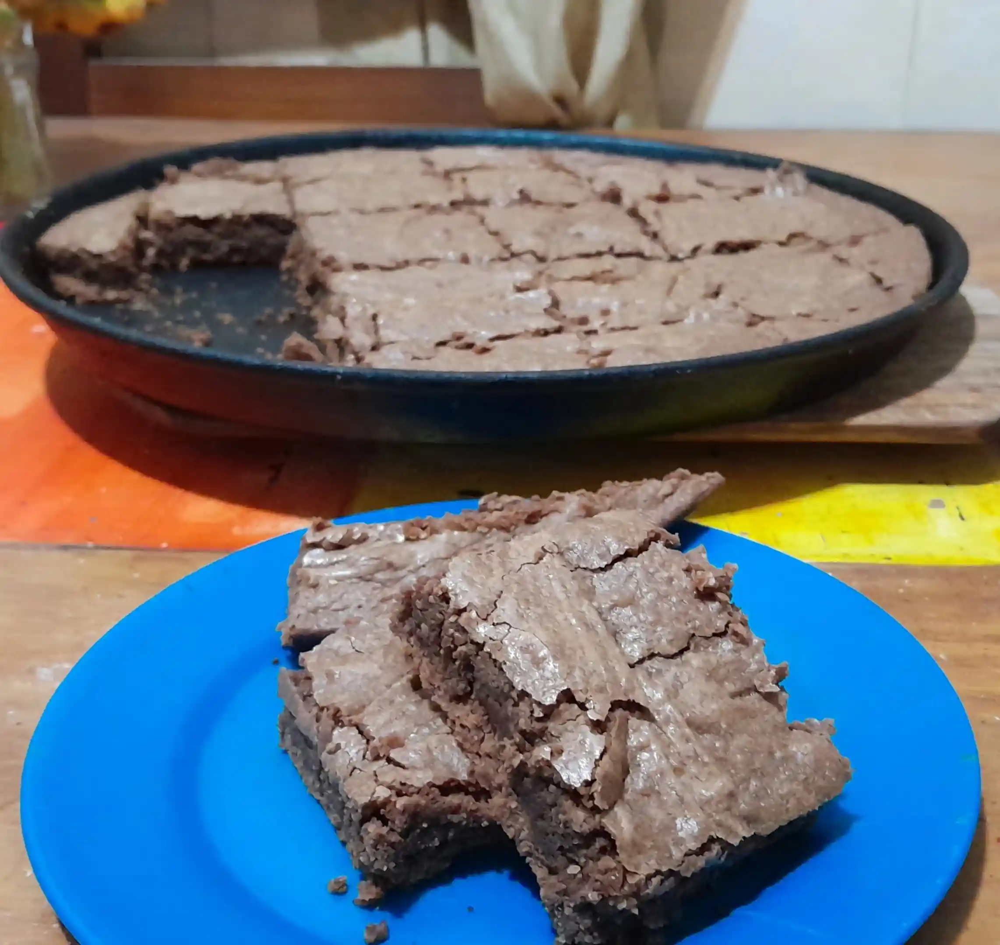
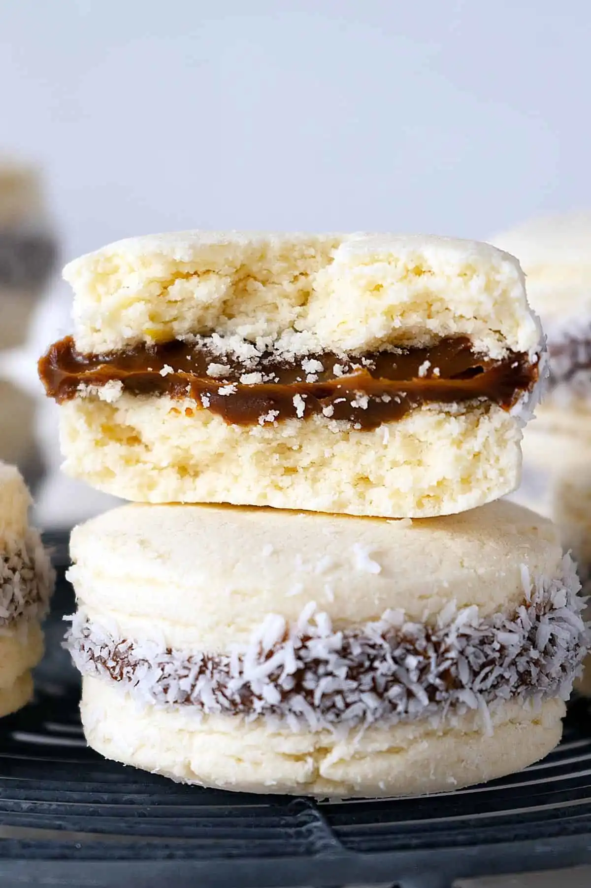
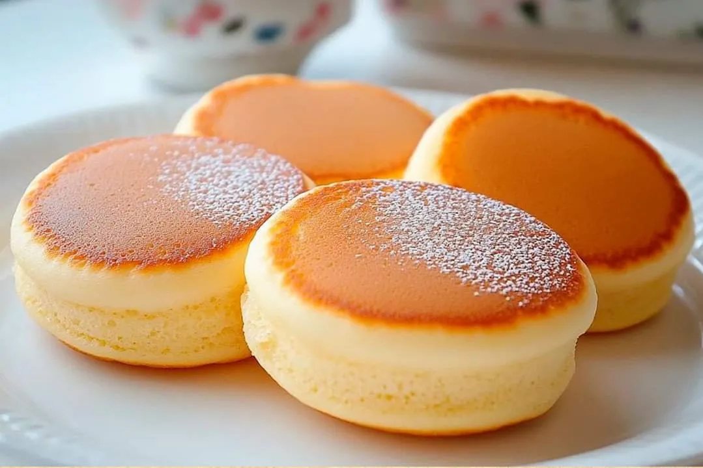
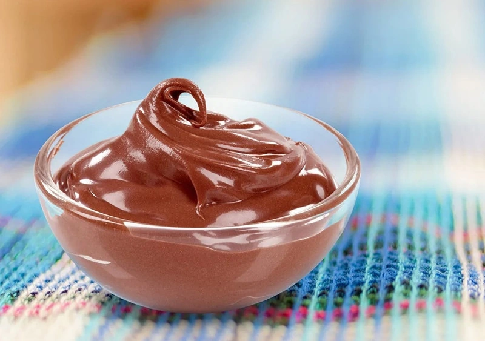

Brownies
Ingredients
135g Bitter chocolate
225g Butter
30g Cocoa powder
250g Brown sugar
280g Flour
3 Eggs
1tsp Vanilla extract
Instructions
Preheat the oven. In a bowl, melt and mix the chocolate with the butter until smooth. Do this gradually to avoid burning. Add the vanilla extract. Stir the cocoa powder. Then add the sugar and finally the eggs. Sift the flour to remove any lumps and fold it in. Spread the batter evenly in a baking pan lined with parchment paper. Bake for 17 minutes. Enjoy!
Classic Argentine Alfajores de Maicena
Ingredients
Dry ingredients:
5 cup (600g) Corn starch
3 cup (400g) all purpose flour
1 tsp Baking soda
4 tsp Baking powder
Wet ingredients:
2.5 cup (300g) Icing sugar
14 oz (400g) unsalted butter
6 Large egg yolks
2 tsp Vanilla extract
Zest of 1 medium sized lemon
Bakery Dulce de Leche
Instructions
Sift everything into a bowl, set aside. In another bowl, mix powdered sugar and butter until creamy using a handheld whisk. Add in egg yolk one by one, mixing well to combine after each addition. Add in vanilla extract, lemon zest and mix to combine. Add in dry ingredients in 3 additions, mixing just enough after each addition. Don't over mix. For the 3rd addition, you will not be able to mix everything to combine using a hand held mixer. When it's half mixed, pour everything onto the working surface. Start folding the mixture onto itself and gently push with your palm until you get a ball. Do not knead. Wrap with cling film and chill in the fridge for 30 minutes or until manageable. Put 1/3 of dough on a cling film and cover it with another. Gently roll it into 8-10mm thickness. If the dough breaks, just gently push it back together. Chill in the fridge for 10 minutes while you continue rolling the rest. Take 1 rolled dough from the fridge and place it on the working surface. Remove the top cling film. Cut out 1.7inch (4.5cm) circles using floured cutter/glass. Place on parchment paper on baking tray. Place in the fridge if you're not baking them immediately. Bake at 360°F (180°C) in a preheated oven, conventional mode, on middle rack for 10-12 minutes or until fully cooked without having any toasted color. Cool completely before using. Pipe dulce de leche on the bottom side of a cookie, more or less the same thickness of the cookie itself. Take another cookie and place it on top and lightly press. Roll in desiccated coconut. Enjoy!
Souffle Pancakes
Ingredients
4 Eggs
40ml Milk
60g Flour
100g Sugar
Instructions
Separate the egg whites from the yolks and place them in different bowls. To the yolks, add the milk and sifted flour (making sure there are no lumps) and mix well. To the egg whites, add the sugar and beat until stiff peaks form. Place a small amount of the meringue in the first bowl, then fold and add it back to the meringue bowl. Place small portions of the batter on a griddle or pan. Add a splash of water to the pan and cover. When they are fluffy, flip them over. Enjoy!
Chocolate Pudding
Ingredients
6 Boiled eggs
50g cocoa powder
180ml Milk
60g Sugar
1 tbs Vanilla extract
Instructions
Blender and refrigerate for at least 3 hours. Enjoy!
Rice Pudding
Ingredients
150g Rice
150g Sugar
1L Water
12 tsp Powdered milk
Or 1L Milk (instead of water and Powdered milk)
Instructions
In a pot, combine all the ingredients and mix well. Bring to boil over high heat. Once boiling, reduce heat to low. Check constantly and stir. Cook for at least 40 minutes, or until the bottom begins to stick, being careful not to let it burn. Then, let it rest for at least 1 hour. Enjoy!